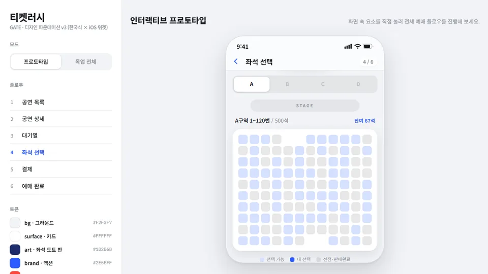
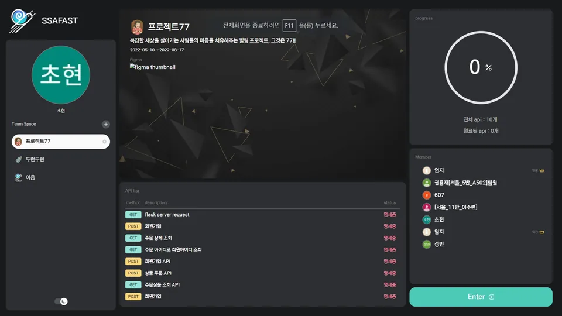

서비스를 만들고 운영하면서, 더 나은 방법을 찾아가는 개발자입니다.
Java·Spring 기반 웹 개발자 권용재입니다. 협력사 포털의 초기 구축과 교육용 단말 관리 시스템의 개발·운영을 맡았습니다. 운영 담당자와 요구사항을 정리하고 화면·API·SQL 개발부터 검수·배포까지 참여하며 업무가 실제로 처리되는 흐름을 익혔습니다.

웹 개발자 권용재
유한책임회사 티지나래
2024.06 ~ 재직 중
기능을 만들 때는 담당자가 어떤 순서로 일하고 어디에서 불편을 겪는지 먼저 살핍니다. 종이 점검표를 전산화하면서 단말별 미완료 사유와 이전 점검 기록을 남겨 다음 방문에서 이어서 처리하도록 했습니다. 화면에 드러난 오류도 서버와 데이터 흐름까지 따라가 원인을 찾고 SQL을 바꿀 때는 속도와 함께 기존 결과가 유지되는지 확인합니다.
최근에는 실제 소개팅 운영 방침을 바탕으로 오늘사이를 개발하며 참가자와 운영자가 쓰는 기능을 함께 만들고 있습니다. 실무에서 익힌 업무 이해와 문제 해결 경험을 살려 필요한 기능을 끝까지 완성하고 사용 중의 불편까지 개선하는 개발자로 일하고 싶습니다.
교육용 단말 운영 시스템(TSMS)2025.09 ~ 현재
실무 · 개발·운영 · 비공개 실무 프로젝트
교육용 단말 관리
서울시교육청 디벗 사업의 교육용 단말 약 11만 대를 등록하고 배송·설치·A/S·점검 이력을 관리하는 시스템입니다.
- 담당
- 화면·API·SQL 개발
- 담당
- 운영 데이터 정리·검증
- 담당
- 검수·배포
A/S 월별 결과 조회 개선: 약 53초 → 1.2초접수별 최신 이력을 직접 조회하도록 SQL을 재작성하고 날짜 검색 조건을 바꿨습니다. 운영 DB에서 변경 전후의 조회 결과를 대조하고 검색 조건별로 중복·누락 여부를 검증했습니다.
종이 점검표와 재방문 업무 전산화단말마다 점검 회차·결과·미완료 사유를 기록해 다음 방문에서 이어서 확인하도록 개발했습니다. 전자서명과 확인서 발급을 연결하고 여러 담당자가 수정할 때 다른 사람의 결과를 덮어쓰지 않도록 처리했습니다.
기존 점검 결과를 보존하며 중복 데이터 정리14·15자리 일련번호가 섞여 다른 단말에 연결되거나 중복 저장되는 문제를 해결했습니다. 저장 기준을 통일하고 백업·복구·검증 절차를 준비한 뒤 기존 점검 결과를 남기면서 중복 행을 정리했습니다.
학교별 서비스 이력 조회 개선: 약 9초 → 0.02초검색한 학교의 접수를 먼저 찾고 필요한 이력만 집계하도록 목록·건수 SQL을 수정했습니다. 운영 DB에서 조회 결과·정렬·건수를 비교 검증했으며 운영 반영 전입니다.
상담이력의 중복 요청과 이전 검색 결과 표시 방지조회 요청을 한 번에 하나로 제한하고 검색 조건이 바뀌면 이전 응답이 화면에 표시되지 않도록 했습니다. 연속 스크롤·검색 조건 변경·오류 후 재조회 상황을 화면 함수 테스트로 검증했습니다.
백엔드·DB: Java 11 · Spring MVC · MyBatis · MariaDB
프론트엔드: JavaScript · WebSquare5 · JSP
교육용 단말 운영 시스템(TSMS)2025.09 ~ 현재
실무 · 개발·운영 · 비공개 실무 프로젝트
교육용 단말 관리
서울시교육청 디벗 사업의 교육용 단말 약 11만 대를 등록하고 배송·설치·A/S·점검 이력을 관리하는 시스템입니다.
- 담당
- 화면·API·SQL 개발
- 담당
- 운영 데이터 정리·검증
- 담당
- 검수·배포
엑셀 단말 등록 검증과 QR 발급등록 목록을 생산입고 정보와 대조해 중복 일련번호와 기존 학교·사용자 정보를 확인하도록 개발했습니다. 검증을 통과한 단말을 일괄 등록하고 QR을 발급해 운영팀의 등록·출력 업무를 지원했습니다.
외부 연동 변경에 대응하는 공통 처리 정리여러 화면에 흩어진 외부 API 호출과 인증 설정을 공통 모듈로 옮겼습니다. 연동 정보가 바뀌면 공통 코드와 설정에서 반영하도록 했습니다.
백엔드·DB: Java 11 · Spring MVC · MyBatis · MariaDB
프론트엔드: JavaScript · WebSquare5 · JSP
B2B 협력사 포털(PPS)2025.02 ~ 현재
실무 · 초기 구축·운영 · 비공개 실무 프로젝트
협력사 포털
본사와 약 500개 협력사가 등록·계약, 현장 엔지니어의 교육·자격·증빙을 관리하는 포털입니다. 초기 구축부터 참여했습니다.
- 담당
- 초기 구축 참여
- 담당
- Vue 화면·Spring Boot API·MyBatis SQL 개발
- 담당
- 검수·배포·운영
대량 파일 압축과 다운로드 진행 상태 표시파일 300~400건의 압축을 비동기 작업으로 바꾸고 화면에 진행·완료·실패 상태를 표시했습니다. 작업 상태를 WAS 인스턴스 간에 공유하고 브라우저에 작업 번호를 저장해 새로고침 후에도 진행 상황을 확인하도록 했습니다.
다른 엔지니어의 첨부파일이 연결되는 오류 해결Vue 화면들이 같은 첨부파일 객체를 참조해 이전 정보가 남는 원인을 찾았습니다. 화면별로 상태를 분리하고 다른 재직 엔지니어의 첨부파일을 연결하려 하면 서버에서도 저장을 막았습니다.
인증번호 중복 발송·재사용 방지어느 WAS가 요청을 받아도 같은 재발송 제한을 적용하고 사용한 인증번호는 다시 쓸 수 없게 했습니다. 인증번호와 문자 내용은 API 응답에서 제외했으며 동시 요청·만료·저장 실패 상황의 단위 테스트를 작성했습니다.
반복 배포 절차를 Jenkins 작업으로 정리소스 반영·빌드·서버 전송·백업·두 WAS 인스턴스 순차 배포를 하나의 작업으로 연결했습니다. 개발·운영 작업을 구분하고 단계별 실행 기록을 남겼습니다.
본사 계정 발급·수정 업무 통합계정 생성·수정과 사내 시스템 전송을 관리 화면에서 처리하도록 개발했습니다. 부서·등급·계정 중복을 검사하고 전송 실패도 화면에서 확인하도록 했습니다.
백엔드·DB: Java 21 · Spring Boot · MyBatis · MariaDB · Oracle
프론트엔드: JavaScript · Vue 2
상태 공유·배포: Hazelcast · Jenkins
B2B 협력사 포털(PPS)2025.02 ~ 현재
실무 · 초기 구축·운영 · 비공개 실무 프로젝트
협력사 포털
본사와 약 500개 협력사가 등록·계약, 현장 엔지니어의 교육·자격·증빙을 관리하는 포털입니다. 초기 구축부터 참여했습니다.
- 담당
- 초기 구축 참여
- 담당
- Vue 화면·Spring Boot API·MyBatis SQL 개발
- 담당
- 검수·배포·운영
계정 변경 전 남은 업무 확인과 부서 정보 동기화부서 변경·사용 중지 전에 남은 재고·서비스 업무를 검사하고 잔여 업무가 있거나 조회에 실패하면 저장을 막았습니다. 부서 변경 시 연동 시스템의 사용자·요청 정보에도 같은 부서코드를 반영했습니다.
알림톡 발송 정책·수신자 관리 기능 개발발송 여부·메시지 양식·추가 수신자와 변경 이력을 관리하도록 개발했습니다. 기본·추가 수신자에 같은 엔지니어가 포함되면 한 번만 발송하고 발송 정책에 따른 처리를 단위 테스트로 확인했습니다.
완료 계약서 이메일 발송과 이력 관리계약이 완료됐는지 확인한 뒤 문서를 첨부해 센터장에게 발송하도록 개발했습니다. 성공·실패와 오류 내용을 남겨 운영자가 발송 결과를 확인하도록 했습니다.
센터별 교육 명단 취합·검증명단 제출부터 관리자의 참석 현황 확인·엑셀 다운로드까지 개발했습니다. 다른 센터 소속이거나 이미 등록된 엔지니어는 등록에서 제외할 대상으로 안내하고 제출을 마친 센터의 명단으로 현황을 집계했습니다.
백엔드·DB: Java 21 · Spring Boot · MyBatis · MariaDB · Oracle
프론트엔드: JavaScript · Vue 2
상태 공유·배포: Hazelcast · Jenkins
서비스·자재 관리 시스템(SR30)주요 작업 2024.07 ~ 2025.01
실무 · 기능 개발·유지보수 · 비공개 실무 프로젝트
서비스·자재 관리
서비스 접수·처리, 자재 재고와 업무 현황을 관리하는 사내 시스템입니다. 입사 초기에는 Nexacro 화면과 Java 서비스·SQL의 기능 추가 및 오류 수정을 맡았습니다.
- 담당
- Nexacro 업무 화면 개발
- 담당
- Java 서비스·MyBatis SQL 추가·수정
- 담당
- 검색 오류·재고 조회 조건 수정
기간·제품군별 서비스 실적 조회 개발조회 기간에 맞춰 월별 열을 구성하고 제품군별 서비스 건수와 인도·반송·취소 현황을 집계했습니다. Nexacro 화면, Java 서비스와 MyBatis SQL을 연결해 기간별 실적을 비교하도록 했습니다.
전화번호로 서비스 내역을 찾지 못하는 오류 수정화면 입력값과 서버 전달값의 연결을 수정하고 암호화된 전화번호를 조회하는 SQL 조건을 추가했습니다. 일반전화·휴대전화와 보조 연락처로 관련 서비스 내역을 찾도록 처리했습니다.
재고 조회의 날짜 조건과 검색 분기 수정기준일 재고와 현재 재고를 비교하는 화면의 조회 조건을 보완했습니다. 자재 입출고 내역의 날짜 컬럼에 적용하던 형변환을 제거하고 현재 재고 선택 여부에 따라 집계 범위를 구분했습니다.
접속·개인정보 다운로드 이력 조회 개발기존 로그를 부서·사용자·기간별로 집계하는 SQL과 조회 화면을 추가했습니다. 로그인, 화면별 접속, 개인정보 다운로드 횟수를 메뉴에서 확인하도록 했습니다.
우정사업 설치·철거 등록 화면과 SQL 추가장비 관리번호로 대상 정보를 조회하고 설치·철거 내용을 저장하는 기능을 개발했습니다. 작업 구분에 맞춰 입력 항목과 대상 조회를 연결했습니다.
백엔드·DB: Java 8 · Spring MVC(eGovFrame 3.9) · MyBatis · Oracle
프론트엔드: JavaScript · Nexacro 17
오프라인 소개팅 운영 서비스(오늘사이)2026.09 ~ 개발 중
개인 프로젝트 · GitHub 저장소
오늘사이
오프라인 소개팅의 상품·일정 등록부터 참가 신청·취소까지 처리하는 서비스를 개발하고 있습니다. 실제 운영 방침을 참고해 회원·인증, 모집 회차와 정원, 참가자·운영자 기능을 설계했습니다.
모집 정원과 동시 신청 처리회차별 DB 행 잠금을 사용하고 정원 확인과 신청 저장을 한 트랜잭션에서 처리했습니다. 회원 조회를 대체한 로컬 테스트에서 마지막 자리 1개에 20건이 동시에 신청해도 1건만 성공하는지 확인했습니다. 중복 신청과 모집 마감·정원 변경 중 신청도 테스트했습니다.
참가자·운영자 화면과 취소 규칙 구현참가자는 신청 내역을 조회·취소하고 운영자는 회차별 신청 목록을 관리합니다. 회차 취소 시 해당 신청을 함께 취소하고 이미 접수된 인원보다 정원을 줄이지 못하게 했습니다.
화면과 서버를 연결한 신청 흐름 검증참가자·운영자 화면과 서버를 함께 실행해 Playwright로 검증하고 GitHub Actions에서 자동 실행합니다. 회원 서비스 중단 시 오류 안내와 로그인 유지, 복구 후 재신청을 확인했습니다.
백엔드·DB: TypeScript · NestJS · Prisma · PostgreSQL
프론트엔드: TypeScript · React · Next.js
테스트·자동화: Vitest · Playwright · GitHub Actions
선착순 티켓 예매 서비스(티켓러시)2026.08 ~ 개발 중
개인 프로젝트 · GitHub 저장소
티켓러시
공연 조회, 대기열 입장, 좌석 선택, 모의 결제와 예매 완료까지 구현한 개인 프로젝트입니다. 같은 좌석을 여러 사용자가 동시에 선택하거나 결제를 반복 요청하는 상황을 중점적으로 다뤘습니다.

좌석 선점과 최종 예약의 중복 방지Redis로 좌석을 5분간 선점하고 MySQL의 회차·좌석 복합 기본키로 최종 예약의 중복을 막았습니다. MySQL·Redis를 사용하는 로컬 통합 테스트에서 같은 좌석에 선점 요청 100건을 동시에 보내 1건만 성공하는지 검증했습니다.
결제 접수와 결과 반영 분리예약을 결제 진행 상태로 바꾸는 작업과 결제 요청 이벤트 저장을 하나의 트랜잭션으로 처리했습니다. 같은 예약에 확정 요청 10건이 동시에 들어와도 이벤트 1건만 남도록 상태 검사와 낙관적 잠금을 적용했습니다.
대기열·좌석·결제 상태를 웹 화면에 연결Next.js로 예매 흐름을 만들고 SSE로 대기 순번과 좌석 상태를 갱신했습니다. 결제 접수 후에는 결과를 조회해 승인·거절을 표시하고 응답 유실 시 같은 요청 식별자로 재시도하도록 처리했습니다.
백엔드·DB: Java 21 · Spring Boot · MySQL · Redis
프론트엔드: TypeScript · React · Next.js
테스트·자동화: Playwright · GitHub Actions
개인 투자 연구·운영 플랫폼(ReachRich)2026.03 ~ 현재
개인 프로젝트 · 비공개 개인 프로젝트
ReachRich
토스증권 API로 계좌·시세 데이터를 수집하고 투자 전략을 검증·모의 운용하는 개인 프로젝트입니다. 기존 연구 코드의 검증 로직을 분리해 옮기고 데이터 수집부터 웹 대시보드에서 결과를 확인하는 과정까지 연결했습니다.
- 담당
- 계좌·시세 수집과 데이터 적재
- 담당
- 기존 전략 검증 모듈 이관
- 담당
- 대시보드·자동 작업·실패 알림
계좌·시세 데이터의 중복 없는 적재SQLAlchemy와 SQLite로 날짜별 계좌 요약과 보유 종목을 한 트랜잭션에서 교체 저장했습니다. 종목별 일봉은 Parquet에 날짜 기준으로 병합해 같은 데이터를 다시 수집해도 중복되지 않도록 했습니다.
외부 API 호출 제한과 부분 실패 처리OAuth2 토큰을 만료 전에 재사용하고 호출 제한 응답에는 서버가 지정한 대기 시간 뒤 한 번 재시도하도록 했습니다. 일부 종목의 조회가 실패해도 나머지를 수집하되 실패 비율이 기준을 넘으면 작업을 실패로 처리했습니다.
미래 데이터 혼입을 막는 전략 검증기존 검증 모듈을 옮겨 전략에는 판단 시점까지의 데이터만 전달하고 매매 결정은 다음 시점부터 결과에 반영하도록 했습니다. 이후 데이터를 제거해도 과거 신호가 바뀌지 않는지 검사하고 미래 데이터를 참조하는 신호를 잡는 테스트를 유지했습니다.
계좌 현황과 매매일지를 연결한 대시보드FastAPI로 로컬에 저장한 계좌 데이터를 조회하고 React 화면에 자산 추이·보유 종목·매매일지를 연결했습니다. 금액 가리기 설정을 저장하고 숨겨진 탭에서는 주기적인 조회를 멈추도록 했습니다.
실행 환경을 나눈 자동 작업과 실패 알림등록된 IP가 필요한 계좌·시세 수집은 로컬 작업으로, 모의 운용 기록과 상태 점검은 GitHub Actions로 구성했습니다. 로컬 작업은 한 단계가 실패해도 다음 단계를 실행하고 로컬·Actions 양쪽의 실패를 텔레그램으로 알리도록 했습니다.
백엔드·데이터: Python · FastAPI · SQLAlchemy · SQLite · Parquet
프론트엔드: TypeScript · React · Vite
테스트·자동화: pytest · Vitest · GitHub Actions
API 명세·테스트 협업 도구(SSAFAST)2023.04 ~ 2023.05
팀 프로젝트 · 6인 · GitHub 저장소
SSAFAST
API 명세를 작성하고 요청을 실행해 응답과 성능 테스트 결과를 확인하는 팀 협업 도구입니다. 프론트엔드에서 명세 입력 폼과 테스트 요청·결과 화면을 맡았습니다.

반복·중첩 구조의 API 입력 폼 구현React Hook Form으로 헤더·경로 변수·쿼리와 중첩 객체를 입력받는 폼을 구성했습니다. API 명세에 따라 입력 항목을 표시하고 테스트에 사용할 값을 관리했습니다.
입력값을 테스트 요청으로 변환폼의 헤더·경로 변수·쿼리·본문을 요청 데이터로 조합하고 실행 API와 연결했습니다. 성능 테스트의 초당 요청 횟수·지속 시간을 입력받아 필수값과 허용 범위를 검사했습니다.
테스트 이력과 결과 상세 화면 개발이전 실행 결과를 조회하고 응답 지연 시간의 평균·백분위, 처리량, 상태 코드별 응답 수를 표시했습니다. 명세 입력에서 실행·결과 확인까지 한 작업 흐름으로 연결했습니다.
프론트엔드: TypeScript · React · Next.js · React Hook Form
기술 · 교육 · 자격권용재 · 웹 개발자
실무 기술
백엔드Java · Spring Boot · Spring MVC · MyBatis
프론트엔드JavaScript · Vue 2 · WebSquare5 · Nexacro 17 · JSP
데이터베이스SQL · MariaDB · Oracle
배포·형상관리Jenkins · Git · SVN
개인·팀 프로젝트의 기술은 각 프로젝트에 표시했습니다.
TOEIC 885점2026.06 · LC 480 · RC 405
TOEIC Speaking Advanced Low2026.06 · 170점
SQLD2024.09 · SQL 개발자 자격 취득
삼성 청년 SW 아카데미(SSAFY) 8기2022.07 ~ 2023.06 · 웹 개발 과정 수료. 팀 프로젝트 세 개에서 프론트엔드를 맡았습니다.
아주대학교 e-비즈니스학과2018.03 ~ 2020.08 · 학사 졸업
California State University, Chico2014.01 ~ 2015.05 · Business Administration 전공 후 아주대학교 편입